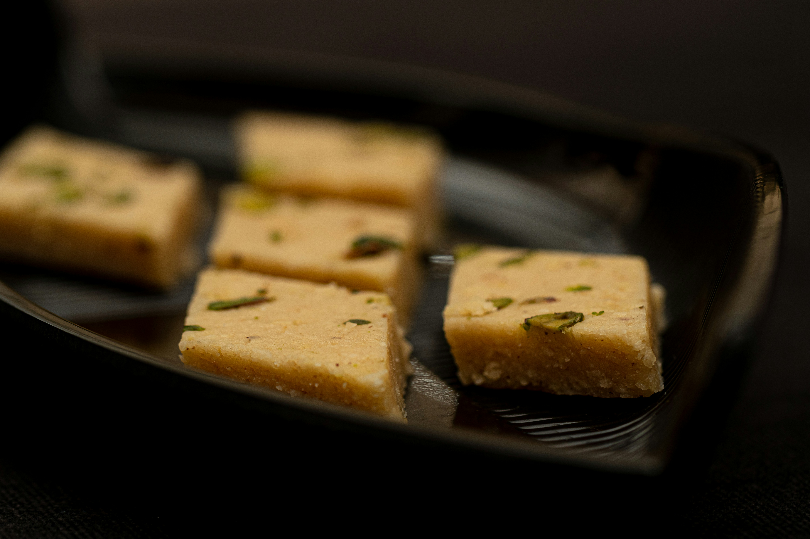

Besin Halwa
Besan halwa is a rich and flavorful sweet made from gram flour (besan), ghee, sugar, and milk. It is roasted
carefully until it turns golden brown and releases a nutty aroma. This halwa has a deep, rich taste and is often
enjoyed during special events and cold weather.
Go Back